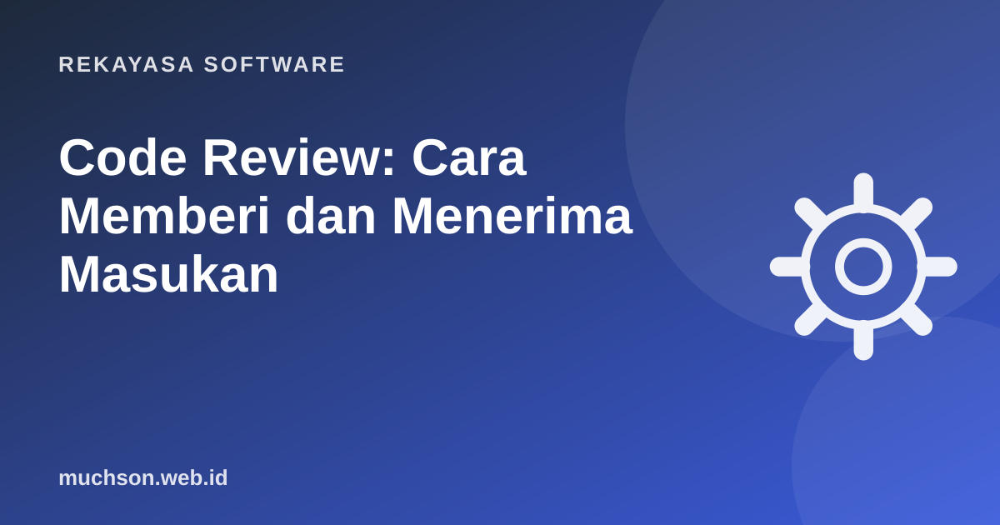

Beranda › Artikel › Rekayasa Software
Rekayasa SoftwareCode Review: Cara Memberi dan Menerima Masukan
Code review adalah kebiasaan tim yang paling sering disalahpahami. Sebagian menganggapnya ajang mencari kesalahan, sebagian hanya mengetik "LGTM" tanpa membaca. Padahal tujuan utamanya sederhana: kesehatan kode tim terus membaik dari waktu ke waktu, dan pengetahuan tidak hanya tersimpan di kepala satu orang.

Untuk apa code review?
- Menemukan bug lebih awal, saat masih murah diperbaiki.
- Menyebarkan pengetahuan: lebih dari satu orang paham bagian sistem itu.
- Menjaga konsistensi desain dan gaya.
- Mendidik: developer baru belajar standar tim dari komentar nyata.
Panduan code review Google merumuskan standarnya dengan pragmatis: setujui perubahan bila perubahan itu jelas memperbaiki kesehatan kode secara keseluruhan, meski belum sempurna. Tidak ada kode yang sempurna; yang ada kode yang lebih baik.
Ukuran pull request: kecil itu cepat
PR berisi 2.000 baris akan dibaca sekilas. PR berisi 200 baris akan dibaca dengan sungguh-sungguh. Pecah pekerjaan besar menjadi beberapa PR yang masing-masing bisa dipahami sendiri.
Apa yang diperiksa, berurutan dari yang terpenting
- Desain: apakah pendekatannya masuk akal dan cocok dengan sistem?
- Kebenaran: apakah melakukan yang dimaksud? Bagaimana kasus kosong, null, error jaringan?
- Keamanan: input divalidasi? Ada data sensitif yang bocor ke log?
- Tes: ada tes untuk perilaku baru dan kasus tepi?
- Keterbacaan: nama, struktur, komentar.
- Gaya: sebaiknya sudah diurus formatter, bukan manusia.
Menulis komentar yang membantu
| Label | Artinya |
|---|---|
| Nit: | Saran kecil, tidak memblokir. |
| Opsional: | Boleh diabaikan, hanya ide. |
| Pertanyaan: | Saya ingin memahami, belum tentu ada masalah. |
| Wajib/Blocking: | Harus diperbaiki sebelum merge (bug, keamanan). |
Label seperti ini membuat penulis PR tahu mana yang harus dikerjakan dan mana yang boleh dilewati.
Untuk penulis PR: cara menerima masukan
- Tulis deskripsi PR: apa yang berubah, mengapa, dan cara menguji. Tambahkan tangkapan layar untuk perubahan tampilan.
- Review kode Anda sendiri di tampilan diff sebelum meminta orang lain.
- Ingat: yang dikomentari adalah kode, bukan Anda.
- Bila tidak setuju, jelaskan alasannya dengan data. Bila buntu, diskusi singkat lewat panggilan lebih cepat dari 20 balasan komentar.
- Balas setiap komentar, misalnya "Sudah diperbaiki di commit abc123".
Kecepatan review penting
PR yang menunggu dua hari membuat penulisnya berpindah konteks, lalu konflik merge bertambah. Banyak tim menyepakati target respons pertama dalam satu hari kerja. Respons pertama tidak harus approve; cukup komentar awal.
Tanya jawab
Berapa jumlah reviewer yang ideal?
Bolehkah AI dipakai untuk code review?
Bagaimana kalau di tim hanya saya developernya?
Sumber dan bacaan lanjut
- Google Engineering Practices: The Standard of Code Review
- Google Engineering Practices: How to write code review comments
- GitHub Docs: About pull request reviews